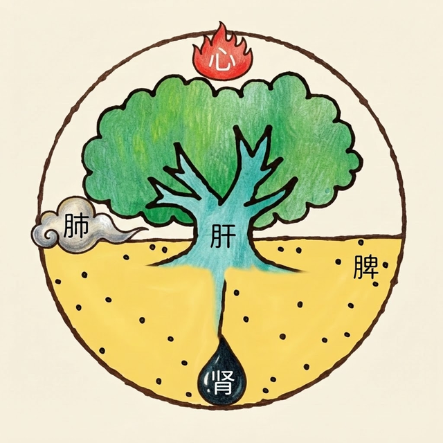

東洋医学の「五臓論」にもとづく30問の体質チェックです。

東洋医学では、心身の状態を「肝・心・脾・肺・腎」という5つの働き（五臓）のバランスでとらえます。ここ1週間の身体の状態について30の質問に答えると、どの臓の働きに乱れが出やすいか、確認できます。
本チェックは東洋医学の考え方にもとづくセルフチェックツールであり、医学的な診断ではありません。体調に不安がある場合や症状が続く場合は、医療機関や専門家にご相談ください。
本チェックは東洋医学の五臓論にもとづくセルフチェックであり、医学的な診断ではありません。あくまで体質傾向を知るための目安としてご活用ください。気になる症状が続く場合は、医療機関や鍼灸師などの専門家にご相談ください。